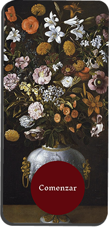
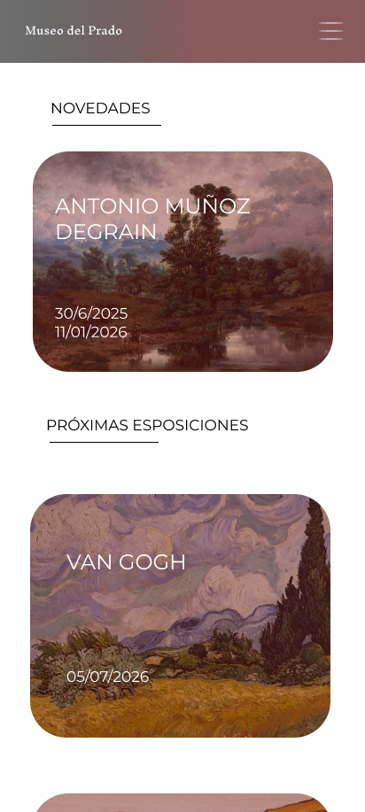
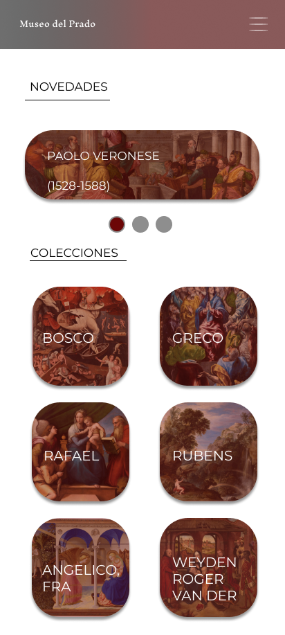
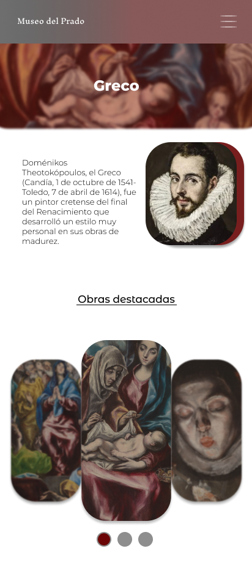
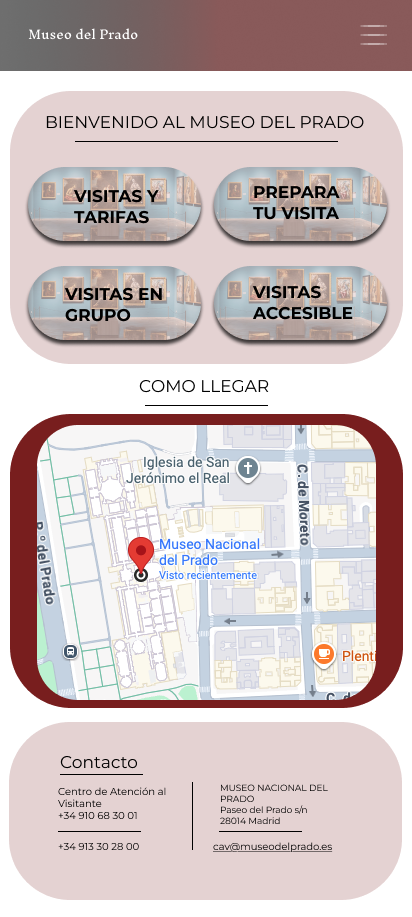

Mejoras a incorporar
- Mejora de la IU cambiando el diseño
- Sección de novedades
- Sección Colecciones
- Obras
- Información
- Mapa del recinto
- Cómo llegar
- Comprar entradas

App móvil · UX / UI
Las aplicaciones del Museo del Prado están centradas principalmente en la exploración de contenido y el aprendizaje, ofreciendo audioguías, recorridos personalizados y acceso a obras digitalizadas. Sin embargo, presentan oportunidades de mejora en la interacción y en la gestión completa de la experiencia del usuario.

Desliza ↓La experiencia visual al abrir la aplicación resulta poco atractiva y transmite la sensación de ser una versión reducida de la web, sin una adaptación real al entorno móvil. La interfaz presenta problemas de jerarquía y organización, con elementos muy próximos entre sí y sin suficiente separación, lo que dificulta la lectura y la correcta identificación de los distintos bloques de contenido. Además, la tipografía y los tamaños no están completamente optimizados para dispositivos móviles, lo que afecta a la legibilidad y a la comodidad de uso. En conjunto, el diseño parece haber sido trasladado desde web a móvil sin una reconsideración de los principios de diseño mobile-first, impactando negativamente en la experiencia del usuario.
A partir del análisis, se detectaron oportunidades para mejorar la experiencia digital de la app del museo ampliando sus funcionalidades. Se propone añadir una sección de novedades con exposiciones actuales y futuras, incluyendo su duración para facilitar la planificación. También se plantea una galería interactiva de autores y obras para una exploración más visual, la compra de entradas desde la app para reducir fricciones, y una sección “Prepara tu visita” con información útil, guías y recomendaciones para mejorar la experiencia del usuario.




A lo largo del proyecto, el diseño evolucionó para mejorar el proceso de compra de entradas, reforzar la coherencia visual con la web oficial del Museo del Prado y simplificar el acceso a la información sobre sus visitas y servicios.
En las primeras versiones del diseño, el proceso de compra de entradas no incluía una confirmación clara una vez seleccionada la fecha y la hora, lo que podía generar dudas durante la reserva. Además, era necesario adaptar la interfaz a la identidad visual de la página web del museo.
Revisamos el flujo de compra e incorporamos una confirmación clara tras la selección de fecha y hora. También ajustamos tamaños, colores y espaciados para destacar las acciones principales e incorporamos imágenes siguiendo la estética de la web oficial del Museo del Prado, manteniendo la coherencia entre ambos diseños.
Inicialmente, la información relacionada con las visitas y la compra de entradas estaba distribuida en diferentes secciones, lo que podía dificultar su localización y hacer que la navegación resultara menos directa.
Reorganizamos el contenido en el apartado «Bienvenido al Museo del Prado», agrupando la información sobre visitas y ventas en un mismo espacio mediante botones de acceso directo. De esta forma, conseguimos simplificar la estructura y facilitar el acceso a los servicios principales.
Este proyecto me permitió aprender a trabajar siguiendo una identidad visual y unas guías estéticas previamente establecidas por una empresa. Adaptar el diseño de la aplicación al lenguaje visual y al layout de la web oficial fue fundamental para conseguir coherencia entre ambas plataformas y ofrecer una experiencia visual unificada.
Daría todavía más importancia a la validación de los flujos de usuario desde las primeras fases del proyecto. También profundizaría en la identificación y priorización de necesidades para conseguir reunir la información y los servicios más importantes en una única aplicación, evitando un exceso de pantallas o elementos que pudieran generar dudas o sobrecargar al usuario.